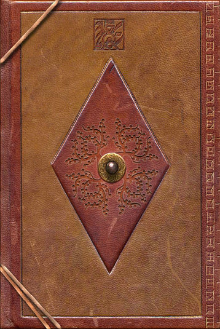
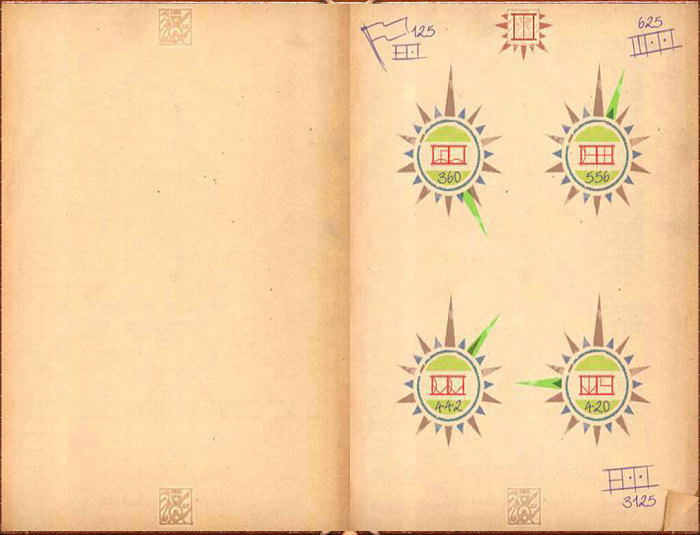
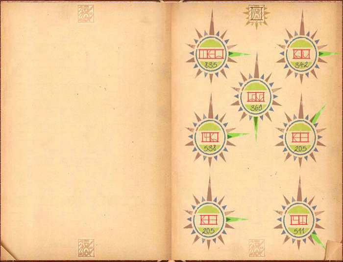
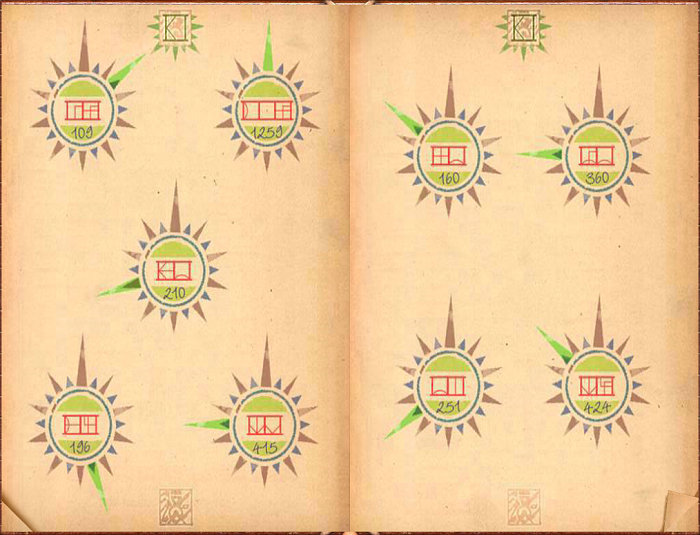
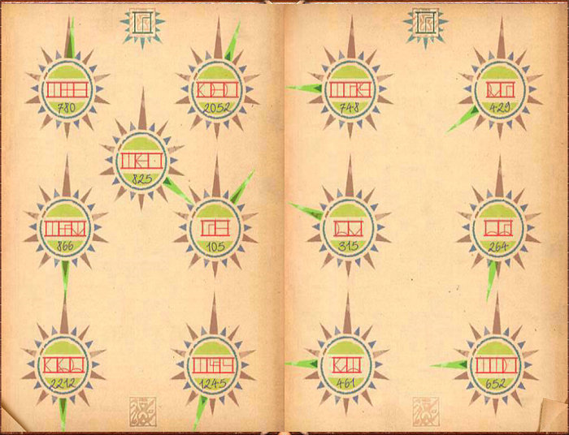
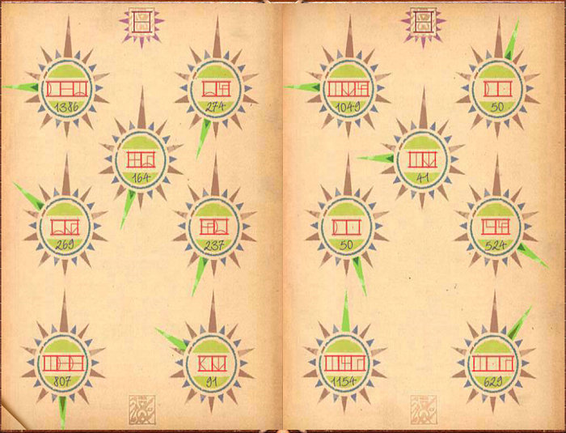

This book laid next to the Linking Book to Minkata in the Library in Ae’gura. It contained a training exercise for Surveyors.






All Myst, Riven and D’ni images and text © Cyan Worlds, Inc. All rights reserved.
No part may be copied or reproduced without express, written permission of Cyan Worlds, Inc.
Assets used with permission.